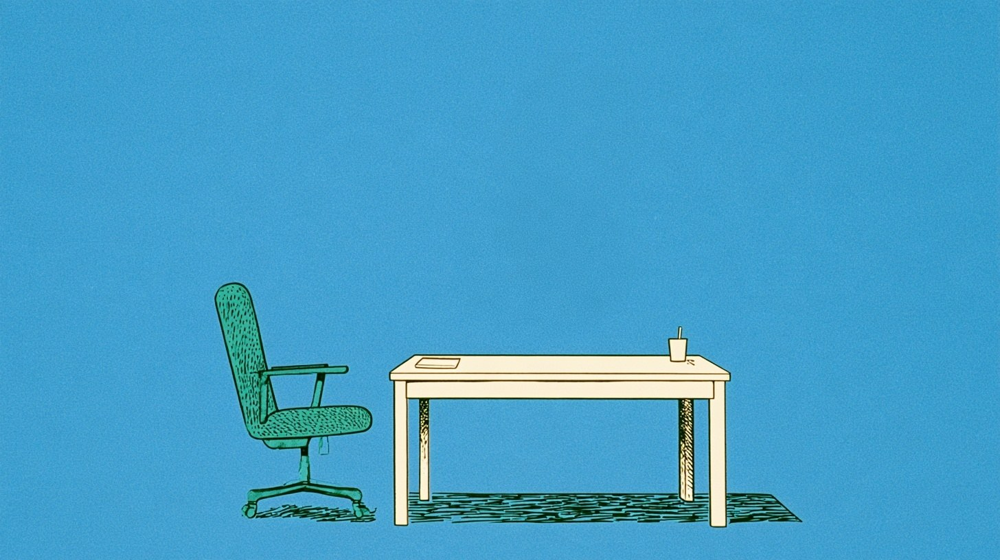
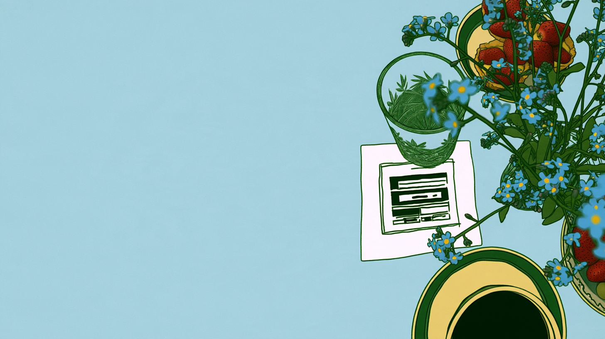
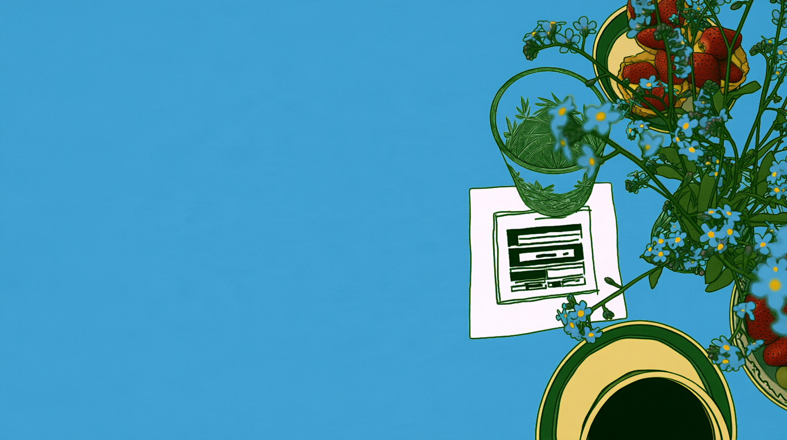
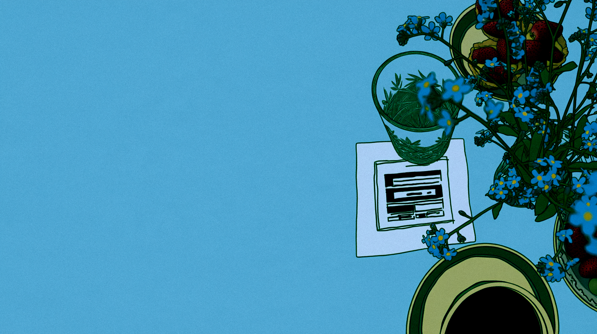

The blue to match.

Pale sky blue.

Only the sky blue changes; flowers, glass, napkin, plates untouched. Smooth fill.

Same as A plus the fine paper grain the desk image has.
Everything moves toward the desk palette, flowers and plates included, plus grain.
